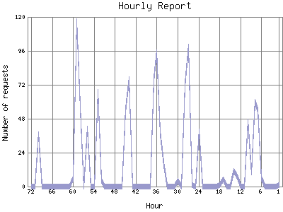

Analog 5.24
Analog 5.24 Report Magic for Analog 2.13
Report Magic for Analog 2.13The Hourly Report identifies the level of activity for each hour within the report timeframe. Remember that one page hit can result in several server requests as the images for each page are loaded.

| Hour | Number of requests | Percentage of the requests | |
|---|---|---|---|
| 1. | Feb 18, 2007 03:00 - 03:59 | 1 | 0.1% |
| 2. | Feb 18, 2007 02:00 - 02:59 | 0 | 0% |
| 3. | Feb 18, 2007 01:00 - 01:59 | 0 | 0% |
| 4. | Feb 18, 2007 00:00 - 00:59 | 0 | 0% |
| 5. | Feb 17, 2007 23:00 - 23:59 | 0 | 0% |
| 6. | Feb 17, 2007 22:00 - 22:59 | 6 | 0.7% |
| 7. | Feb 17, 2007 21:00 - 21:59 | 54 | 0.58% |
| 8. | Feb 17, 2007 20:00 - 20:59 | 60 | 0.64% |
| 9. | Feb 17, 2007 19:00 - 19:59 | 10 | 0.10% |
| 10. | Feb 17, 2007 18:00 - 18:59 | 46 | 0.50% |
| 11. | Feb 17, 2007 17:00 - 17:59 | 0 | 0% |
| 12. | Feb 17, 2007 16:00 - 16:59 | 0 | 0% |
| 13. | Feb 17, 2007 15:00 - 15:59 | 7 | 0.8% |
| 14. | Feb 17, 2007 14:00 - 14:59 | 11 | 0.11% |
| 15. | Feb 17, 2007 13:00 - 13:59 | 0 | 0% |
| 16. | Feb 17, 2007 12:00 - 12:59 | 0 | 0% |
| 17. | Feb 17, 2007 11:00 - 11:59 | 5 | 0.6% |
| 18. | Feb 17, 2007 10:00 - 10:59 | 1 | 0.1% |
| 19. | Feb 17, 2007 09:00 - 09:59 | 0 | 0% |
| 20. | Feb 17, 2007 08:00 - 08:59 | 0 | 0% |
| 21. | Feb 17, 2007 07:00 - 07:59 | 0 | 0% |
| 22. | Feb 17, 2007 06:00 - 06:59 | 0 | 0% |
| 23. | Feb 17, 2007 05:00 - 05:59 | 0 | 0% |
| 24. | Feb 17, 2007 04:00 - 04:59 | 39 | 0.41% |
| 25. | Feb 17, 2007 03:00 - 03:59 | 0 | 0% |
| 26. | Feb 17, 2007 02:00 - 02:59 | 1 | 0.1% |
| 27. | Feb 17, 2007 01:00 - 01:59 | 99 | 1.7% |
| 28. | Feb 17, 2007 00:00 - 00:59 | 72 | 0.78% |
| 29. | Feb 16, 2007 23:00 - 23:59 | 0 | 0% |
| 30. | Feb 16, 2007 22:00 - 22:59 | 4 | 0.4% |
| 31. | Feb 16, 2007 21:00 - 21:59 | 0 | 0% |
| 32. | Feb 16, 2007 20:00 - 20:59 | 0 | 0% |
| 33. | Feb 16, 2007 19:00 - 19:59 | 0 | 0% |
| 34. | Feb 16, 2007 18:00 - 18:59 | 16 | 0.18% |
| 35. | Feb 16, 2007 17:00 - 17:59 | 38 | 0.40% |
| 36. | Feb 16, 2007 16:00 - 16:59 | 95 | 1.1% |
| 37. | Feb 16, 2007 15:00 - 15:59 | 76 | 0.81% |
| 38. | Feb 16, 2007 14:00 - 14:59 | 0 | 0% |
| 39. | Feb 16, 2007 13:00 - 13:59 | 0 | 0% |
| 40. | Feb 16, 2007 12:00 - 12:59 | 0 | 0% |
| 41. | Feb 16, 2007 11:00 - 11:59 | 0 | 0% |
| 42. | Feb 16, 2007 10:00 - 10:59 | 0 | 0% |
| 43. | Feb 16, 2007 09:00 - 09:59 | 0 | 0% |
| 44. | Feb 16, 2007 08:00 - 08:59 | 76 | 0.81% |
| 45. | Feb 16, 2007 07:00 - 07:59 | 54 | 0.58% |
| 46. | Feb 16, 2007 06:00 - 06:59 | 0 | 0% |
| 47. | Feb 16, 2007 05:00 - 05:59 | 0 | 0% |
| 48. | Feb 16, 2007 04:00 - 04:59 | 0 | 0% |
| 49. | Feb 16, 2007 03:00 - 03:59 | 0 | 0% |
| 50. | Feb 16, 2007 02:00 - 02:59 | 0 | 0% |
| 51. | Feb 16, 2007 01:00 - 01:59 | 0 | 0% |
| 52. | Feb 16, 2007 00:00 - 00:59 | 4 | 0.4% |
| 53. | Feb 15, 2007 23:00 - 23:59 | 67 | 0.71% |
| 54. | Feb 15, 2007 22:00 - 22:59 | 0 | 0% |
| 55. | Feb 15, 2007 21:00 - 21:59 | 0 | 0% |
| 56. | Feb 15, 2007 20:00 - 20:59 | 41 | 0.43% |
| 57. | Feb 15, 2007 19:00 - 19:59 | 0 | 0% |
| 58. | Feb 15, 2007 18:00 - 18:59 | 56 | 0.60% |
| 59. | Feb 15, 2007 17:00 - 17:59 | 117 | 1.26% |
| 60. | Feb 15, 2007 16:00 - 16:59 | 6 | 0.7% |
| 61. | Feb 15, 2007 15:00 - 15:59 | 0 | 0% |
| 62. | Feb 15, 2007 14:00 - 14:59 | 0 | 0% |
| 63. | Feb 15, 2007 13:00 - 13:59 | 0 | 0% |
| 64. | Feb 15, 2007 12:00 - 12:59 | 0 | 0% |
| 65. | Feb 15, 2007 11:00 - 11:59 | 0 | 0% |
| 66. | Feb 15, 2007 10:00 - 10:59 | 0 | 0% |
| 67. | Feb 15, 2007 09:00 - 09:59 | 0 | 0% |
| 68. | Feb 15, 2007 08:00 - 08:59 | 0 | 0% |
| 69. | Feb 15, 2007 07:00 - 07:59 | 0 | 0% |
| 70. | Feb 15, 2007 06:00 - 06:59 | 37 | 0.40% |
| 71. | Feb 15, 2007 05:00 - 05:59 | 0 | 0% |
| 72. | Feb 15, 2007 04:00 - 04:59 | 0 | 0% |
Most active hour Feb 5, 2007 21:00 - 21:59 : 938 requests handled.
Hourly average: 39 requests handled.
This report was generated on February 18, 2007 02:24.
Report time frame February 4, 2007 20:17 to February 18, 2007 03:34.
| Web statistics report produced by: | |
| Analog 5.24 | Report Magic for Analog 2.13 |